About Tanzania
About Tanzania The commercial capital and largest city in Tanzania, Dar es Salaam is where you can experience the fusion of the Swahili culture and modern life. Affectionately known as “Dar”, the city is Africa's fifth most populous megalopolis, and continuing to grow at a dizzying rate. It is home to fun beaches, ancient ruins, historical museums and is located near impressive conservation areas.
This is all about Dar es Salaam, Tanzania's beautiful metropolis.
Dar es Salaam, Harbor of Peace
On the east coast of Tanzania,, in a beautiful harbor 40 kilometers south of Zanzibar, lies the sprawling city of Dar es Salaam. Dar is the largest city in East Africa, its name means “Harbor of Peace”, or “House of Peace” in the Arabic language. Its shores are washed by the Indian Ocean, and green areas surround the city and its suburbs from the mainland side. Dar es Salaam is an important ocean port on international maritime routes. It is Tanzania's largest and most developed city, and it used to be the capital until the close of the 20th century.
Long ago, this city was merely a fishing village, but today the city is a bustling metropolis that continues to expand in area, as well as increase in population density, and is named on the list of the world's fastest-growing cities. While historic buildings in the city center reflect the colonial past, the chaotically scattered high-rises and new neighborhoods springing up indicate the city’s rapid idevelopment.
Most of the new tall office buildings constructed in the city center of Dar are built for practicality, not for architectural or aesthetic purposes. Therefore, you won’t see a beautiful city skyline as you may find in other international cities.
Strolling through East Africa’s Largest Metropolis
If you were to stroll through the streets of Dar es Salaam you would discover several neighborhoods, from ritzy ocean-front areas, bustling shopping districts to business centers. You would certainly hear the shouts and beeps of Dar’s notorious traffic jams, and if you were to visit the famous fish market, you would likely get a good whiff of saltwater and fresh fish, too.
You would also get a feel for the diversity of this city: the mix of traditional African and Swahili culture, blended with influences of Arab, India, and other parts of Asia. You would likely discover that, in Dar es Salaam this diversity isn’t just the historical foundation the city was built upon, but the mix of cultures is part of its modern story, too.
Arrival at Tanzania’s Major City
It’s likely you will fly into the capital city of Tanzania via Julius Nyerere International Airport in Dar es Salaam, named for the nation’s foremost leader, fighter for independence and first president.
Julius Nyerere, originally a teacher, became Tanzania’s first president after the nation gained independence from Great Britain, and later unified with Zanzibar to form the United Republic of Tanzania. Initially, Dar es Salaam was the nation’s capital, and you’ll likely see many landmarks named for the beloved “Father of the Nation“, Nyerere himself.
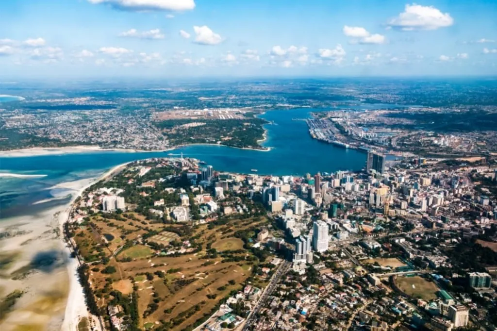
If you travel by land, it is most probable that the bus will take you to Magufuli Bus Terminal. This brand-new terminal is a beautiful modern complex that connects Dar es Salaam with almost all parts of Tanzania and even with neighboring countries. Several hundred bus companies operate through this terminal: you can reach Kenya, the Democratic Republic of Congo, Uganda, Malawi and other neighboring countries, as well as other local destinations, from here.
You could also reach Dar es Salaam via water: on the ferry from Zanzibar. There are frequent flights from Arusha to Zanzibar, and it’s a popular choice of tourists to take the 3-hour ferry from the archipelago of Zanzibar to the mainland via Dar’s port.
Alternatively, if you have plenty of time and are seeking a different perspective of travel, the Tanzanian railway has recently been renovated and serves all parts of the country, including Western Tanzania. While the train is a slower form of travel, you might enjoy the budget-friendly price of the overnight train from Arusha to Dar, with its spacious cars and a chance to really see the diverse landscape of this beautiful nation.
Kivukoni - Dar Es Salaam's Heart
However you reach the city, at some point, you are sure to reach the Kivukoni Ward. It is located at Dar es Salaam’s historical center. Here you can see with your own eyes the buildings that are frequently depicted on postcards and advertisements of Dar es Salaam.
It is at Kivukoni that one of the best-known buildings of Dar es Salaam is located: the Azania Front Lutheran Church. The church’s pretty white walls and red Bavarian-style tiled eaves are stunning, a remnant of the early 19th century German design. It has withstood the strong sun and salty air of Dar es Salaam for over a century, and remains today, beautifully embraced by palm trees.
Nearby is the Askari monument, which marks precisely the center of Dar es Salaam. The pedestal is topped with a bronze statue of a soldier holding a rifle with a bayonet. Askari means “soldier” in Swahili. It is a memorial to the Tanzanian Army privates who fought as part of a British battalion in World War I.
This monument is part of a larger “trilogy’ piece, along with Kenya’s other Askari monuments, located in the cities of Mombasa and Nairobi, which pay tribute to Kenyan soldiers who also fought aside the British in WW1.
Not far away is yet another historical monument, the famous Clock Tower that was erected to commemorate Tanganyika’s Independence in 1961. This monument is another hallmark of the city.
Kivukoni is one of the most modern and developed areas. Here is not only the residence of the president but also almost all state institutions of the country and foreign embassies and offices of major Tanzanian companies. The city of Dodoma is considered the official capital of Tanzania, but Dar es Salaam remains the political and business center of the country.
The Streets of Dar es Salaam
While there may not be many “walkable” sidewalks throughout the city for a leisurely stroll, tourists find walking the ocean front promenades near the Hotel Slipway or the Oyster Bay area offer a lovely ocean view and refreshing breeze and wonderful dining options, too.
You may also find pedestrian-friendly areas in downtown, where you could wander a little with the busy business men and women as they go about their day. However, in other areas of Dar es Salaam, you may find that motorcycles or vendors have overtaken the sidewalks and that walking isn’t a pleasurable venture.
All along the strees of Dar, you’re sure to see street vendors selling shoes, clothing, sweets, and of course, refreshments: everything from iced sodas and water to freshly squeezed fruit juices or sugar cane juice. And, you will likely want a drink! Dar es Salaam is located just 6.5 degrees south of the equator and remains hot year-round. Drinks sold along the streets should all be reasonably priced, around 1000- 2000 Tanzanian Shillings. If you want to know more about local currency and how to exchange money, check out our guide.
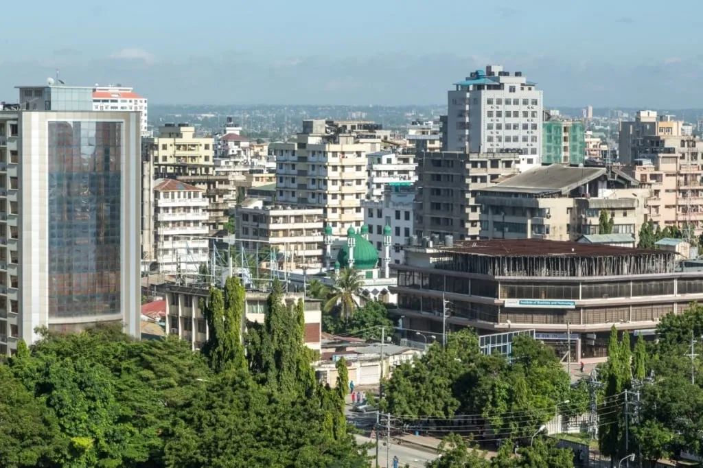
There are many good restaurants and cafes all throughout Dar, so you won’t have to look hard to find something delicious to eat. Dar is known for fresh seafood, fish and local cuisines such as rice or cornmeal porridge, called ugal.
Read more about out food tips for your trip to Tanzania, here.
Population Of Dar es Salaam
There are an estimated 7 million residents in Dar es Salaam; the more precise number depends on whether you take suburbs into account, or not. Dar closes the top five of the African cities according to population. As for the population growth rate, Dar es Salaam is among the 15 fastest growing cities in the world.
English and Swahili are spoken widely in the city, but you might also hear some Arabi as well.
Christianity and Islam are both well-represented in this city, with the two religious groups coinciding peacefully together. Throughout Tanzania, both Christian and Musilm traditions and holidays are celebrated and recognized by the government and you will likely see many residents dressing in traditional Muslim attire. However, the Islamic traditions are more pronounced in neighboring Zanzibar than they are here in Dar.
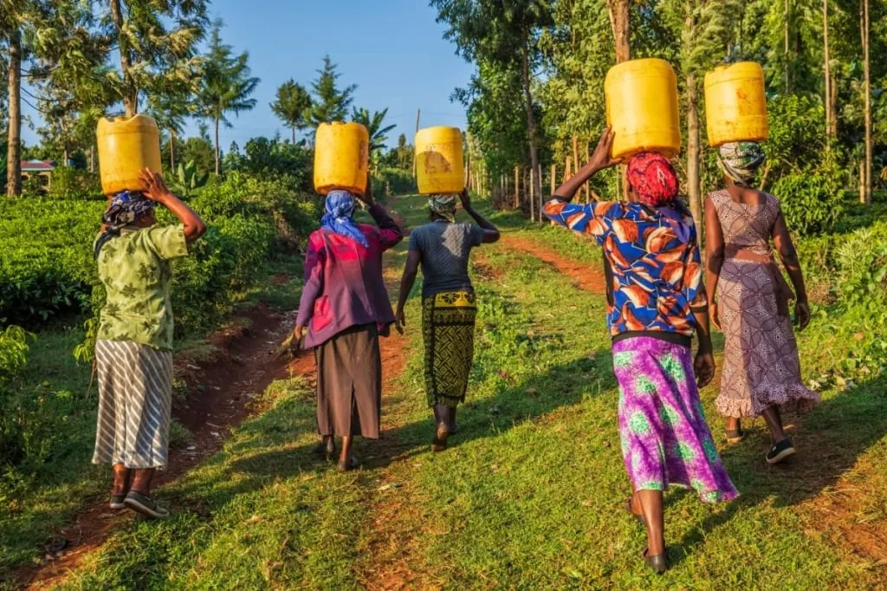
In general, people in Dar are friendly, and walking around the city is safe. Although, like in every city of the world, some careless tourists occasionally get into trouble here. To avoid getting in such a situation, read our special feature on safety in Tanzania.
Remember the basic rules of a prudent tourist: do not unnecessarily show large sums of money or other expensive things. Only ride in designated taxis (they are well-marked and every driver has an official ID, which you can ask to see before entering the vehicle). Inquire with hotel staff if you need assistance; exchange money at official banks and or bureaus and don’t walk alone at night without your tour guide.
If you tour the city, you will find that there are impoverished areas of Dar es Salaam; places with houses badly needing repair or entire communities with poorly constructed fences, buildings made from scrap materials , chickens running loose, and other signs of poverty. One of the unique features of Dar is that you can walk through prestigious neighborhoods (such as the embassies around Kivukoni and the ritsy homes of Oyster Bay), with beautifully tended gardens, and the impoverished, struggling neighborhoods with tiny vegetable plots, within the same day. Both of these make up Dar es Salaam: both the poor communities and the wealthy ones.
Public Transport in Dar es Salaam
The roads of the Dar es Salaam are filled with cars, vans, motorcycles and three-wheeled covered cabs, called ‘Bajajis’. In general, the situation with public transport in Tanzania is overcrowded and generally slow, with many people packed into small buses or minivans. The appeal is that it is very cheap and somewhat reliable, if you are familiar with the city. If you are visiting Dar for a few days, Dar’s public transportation likely isn’t a comfortable or convenient option during your visit. Dar es Salaam is the only city in Tanzania that can claim to have a developing network of urban passenger transport. In recent years, the metropolis has managed to launch a system of high-speed public transport. Stations are actively built on busy highways, and designated lines appear on the roads and have helped to lessen congestion in the city center.
If you have only a short distance to travel, you could opt for a fun adventure in a bajaj. These small 3-wheeled vehicles (much like tuk-tuks in Asian countries) can carry 3 adults and manage to move a bit faster than cars, as they can take more narrow manouvers than taxis or mini vans. They are considered a safe and convenient way to travel short distances within Dar city.
Another important means of transportation are ferries. Dar es Salaam is divided into two parts by a wide bay and ferries or water taxis are an easy means of travel between the two sides of the bay. Alternatively, a new bridge has been constructed across the bay - if you feel up for a long stroll over the water there is a pedestrian walkway.
City Architecture
While many guidebooks suggest that much of Dar es Salaam's architecture originates from its colonial period, there aren’t many outstanding colonial buildings to speak of. However, there are a few noteworthy buildings that have withstood both time and the strong equatorial sun and are available for tourists to view. You may find some old stone buildings near the Bay and some Art Deco structures, as well.
If you are fond of Arabic architecture, with its elegant mosques and numerous arches and arabesques, take a trip to Zanzibar. The Arab and Indian architectural heritage is much better preserved there than in the city of Dar. In Dar es Salaam, mosques are often lost against the background of poorly organized dense urban development. However, there are several landmark mosques located in Dar es Salaam. If you’re a devout Muslim (or appreciate the architecture with a respect to the religion), you may be interested in visiting some of the noteworthy mosques in the city: the very beautiful Khoja Shia Ithna-Ashari Masjid, the Masjid Maamur, Masjid Hakimi, the famous Sunni Mosque, or the Masjid Qiblatain in the center.
Worth Visiting in Dar es Salaam
Now that you have an idea of the most densely populated city on the Swahili shore ,check out the list of exciting places to visit.
Best Spots in Dar es Salaam
For those who want to enjoy the city to the fullest, check out the famous Kariakoo Market: the largest market in Dar es Salaam. Here, city life is in full swing and you can feel the pulse of Dar es Salaam from dawn to dusk. You can buy nearly anything you can imagine in Kariakoo - from beautiful traditional fabrics, to the latest electronics or home decor.
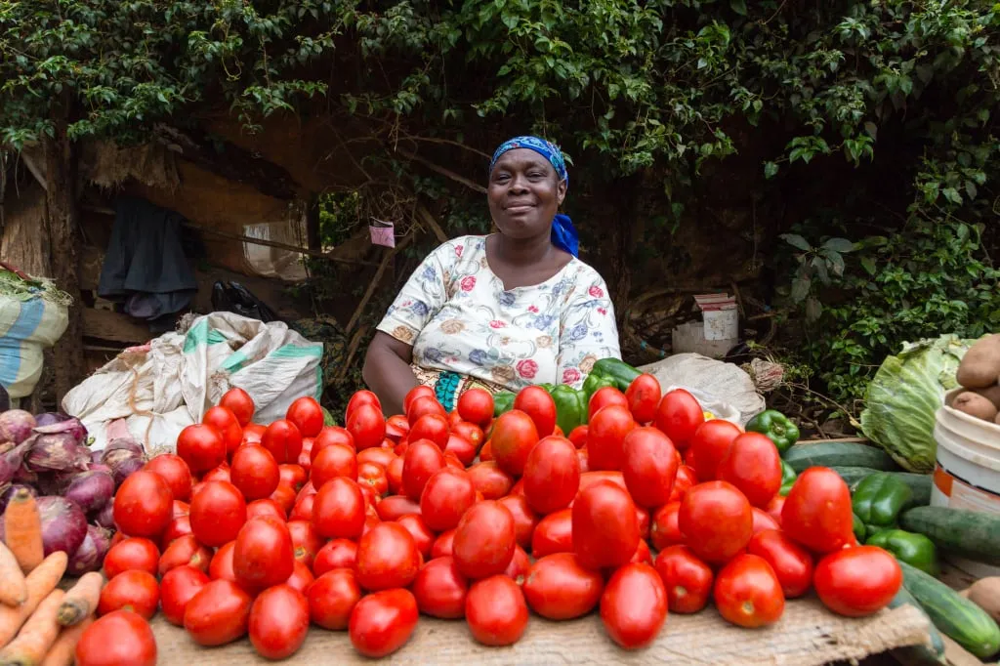
Kivukoni is deemed the touristic district, and you will likely stay in one of the lovely hotels located there. At the very least, you should take a stroll through this district, with its beautiful buildings and well-kept streets. Kivukoni’s largest markets are Msasani and Mzizima. By the way, Mzizima was the name of the original fishing village, where Dar es Salaam stands today.
Mzizima market (or simply Kivukoni Fish Market) is an absolute must-visit for those who love fish and seafood. It is said that you can find fish of all tastes here. And, you can buy both fresh fish and fish cooked directly at the market, too. We advise you to go to the market in the morning or in the evening when fishermen deliver their fresh catches.
For hiking enthusiasts, we recommend walking along Barack Obama Drive, which winds around Kivukoni with the white sandy shoreline is just around the corner. In the morning, you can watch the beautiful sunrise over the vast Indian Ocean from this pathway.
Museums of Dar es Salaam
Also located in Kivukoni is the National Museum of Tanzania. It is considered to be the oldest and largest museum in Tanzania. We recommend starting all museum excursions and visiting the permanent/temporary exhibitions from there. You can either visit the museum and enjoy the exhibits in general, or ask for an individual program if you have something specific you are interested in.
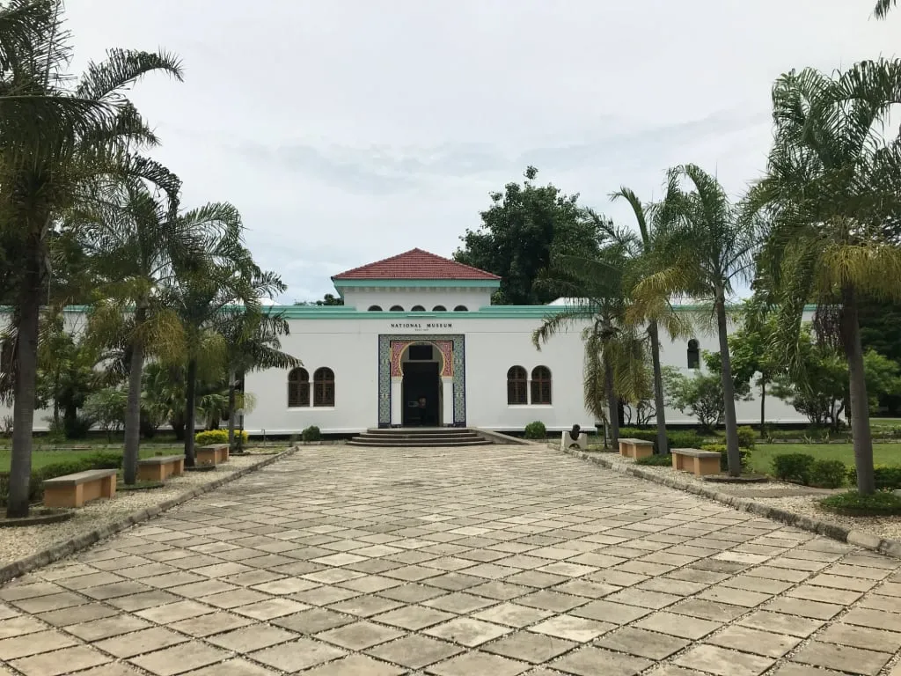
- The National Museum and House of Culture is Tanzania’s historical museum dedicated to commemorating the human lives stolen in the slave trade, as well as recognizing the historical colonial past of Tanzania. Here you will also see examples of ancient Tanzanian culture, including ethnographic collections from various Tanzanian tribes and ancient artifacts from the former trading city, Kilwa and Olduvai Gorge in Tanzania’s north.
- Village Museum: this is a permanent exhibition dedicated to the rural life of the Tanzanians (Makumbusho). It is an open-air site, which includes over 30 traditional huts of three different types – msongo, tembe, and banda. Until recently, these types of huts could be seen over the major part of Tanzania’s territory, but now, these edifices made of natural materials are only used in the hardest-to-reach and the poorest villages, where semi-tribal communities reside.
- The National Natural History Museum is located in the town of Arusha. Its permanent exhibition showcases the various archaeological and paleontological discoveries made in different parts of Tanzania, as well as various animals and plants, including regional endemics.
- The Arusha Declaration Museum is a museum of contemporary political history of Tanzania, focusing on the period following the country's independence from Great Britain in 1967. The museum is located in the building where a historic meeting took place, during which President Julius Nyerere proclaimed and adopted the Arusha Declaration, a document outlining a course towards ujamaa, or African socialism, based on the protection of human dignity, the elimination of poverty, ignorance, and disease, collective economic activity, and reliance on domestic resources with minimal foreign capital.
- The Mwalimu Julius Kambarage Nyerere Museum is a museum dedicated to Tanzania's first president, Julius Nyerere, and his home village of Butiama, located in the north of the country between Lake Victoria and the Serengeti National Park. The museum exhibits include personal belongings and political artifacts related to Nyerere, as well as his mausoleum, which is known as the "Mausoleum of the Father of the Nation."
- The Maji Maji War Memorial Museum is located in the city of Songea and is dedicated to the Maji Maji Rebellion, a series of uprisings that took place between 1905 and 1907. During this time, local peasants were economically oppressed and violently suppressed by German colonizers, leading to a rebellion in which tens or even hundreds of thousands of Tanzanians died, with 67 Maji Maji heroes being publicly executed in the place where the memorial now stands.
- The Kawawa Memorial Museum is dedicated to Rashidi Mfaume Kawawa, a Tanzanian politician from the 1960s and 1970s and a deputy of Julius Nyerere, who served as the first prime minister of the country.
All of the above museums are part of a single museum complex. Some individual fragments of the exposition can be found in the Dar es Salaam National Museum, but most of the museum artifacts from points 2-7 are represented in the branches.
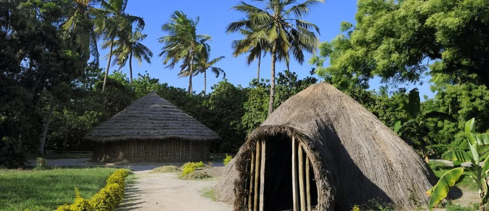
Of all the museums, Makumbusho (the Village Museum), is definitely worth your a visit. The tree branch huts represent a simplicity and connection to nature which is speaks to the history of rural life in Tanzania. In addition, ritual dances and other events demonstrating the tribal culture are often held on the territory of the museum and are sure to enrich your experience in Tanzania.
The National Museum of Tanzania has a gallery of modern art, and you can also see photos of images of cave paintings found not only in Tanzania, but also in other parts of Africa for an all-around experience of art and culture.
Parks and Conservation Areas
Next to the museum, there is a small botanical garden which gives a sample of some of the trees and plants typical of Tanzania. You won't find much botanical information here, but you can take a nice walk in the shade of the sprawling palm trees and relax on the benches under the trees.
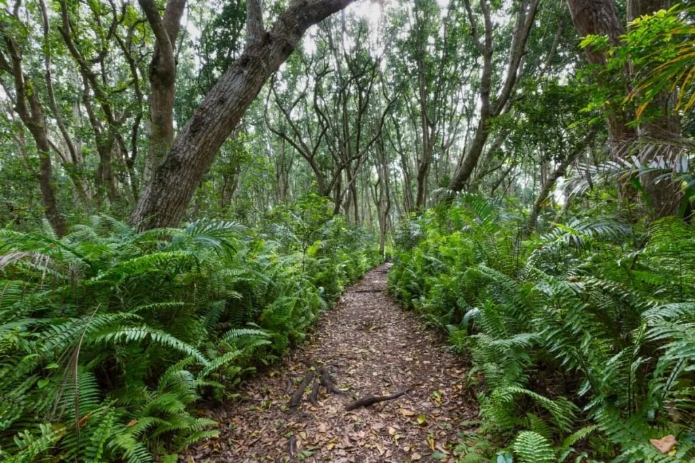
There are many small parks in and around the city for comfortable walks, as well as nature reserves such as the Pande Game Reserve and the Pugu Hills Forest Reserve. The former is right in the city, in the northern part. You can hike, bike, and explore the local butterflies and birds, as well as the plants that are abundant there. Pugu Hills Forest Reserve is a bit further, located an hour and a half drive from downtown and includes a small lake. The Pugu Hills command a beautiful view of Dar es Salaam. Entrance into the protected forest costs little money, and for informative walks, you can hire a guide who will tell you about the local trees and the history of the area where the Zaramo tribes once lived.
Both conservation areas are the remnants of Tanzania's dense coastal forests, which are now being actively cut down for more and more space for the expanding city. As a result, every green space in the Dar es Salaam region is now more highly valued. The nearest national park to the city is Saadani National Park, a hundred kilometers north of Dar es Salaam. It is also the only national park along the Indian Ocean coast. Its territory is almost completely covered by mangroves inhabited by elephants, antelopes, and lions. A river runs through the park, which attracts hippos and crocodiles. You can take a boat ride on the river with a guide who will show you both large predators and monkeys descending towards the water and many birds that settle in the trees of the park. The treeless area is home to warthogs, water goats, giraffes, and buffalo. Beautiful green turtles live along the coast. Saadani is one of Tanzania's smaller parks because of its unique proximity to the ocean and the presence of human settlements nearby.
Dar es Salaam is a logistically favorable point, with many connections to popular parks and reserves such as Nyerere National Park (formerly, Selous Game Reserve), Ruaha National Park, with easy connections to Lake Manyara and Serengeti, as well.
Ancient Ruins near Dar
If you have a day or two to spare, you can visit ancient ruins of former booming cities that speak to the importance of Tanzania centuries ago. You can find fascinating ruins relatively close to Dar es Salaam.
The most famous is Kilwa Island, 250 km south of Dar es Salaam. There is an archeological monument - a complex of stone buildings built in the 13th-18th centuries: Kilwa Mosque, Husuni Kubwa and Husuni Ndogo palaces, and Gereza Fort. They are on the UNESCO World Heritage List and are the monuments of the bygone Swahili culture, a powerful city-state that traded with many cities in what are now modern-day Kenya, Mozambique, Tanzania, as well as the island city-states of Madagascar, Zanzibar Archipelago, and Comoros. It is believed that most of the artifacts and structures of Kilwa-Kisiwani are still to be properly studied by archaeologists.
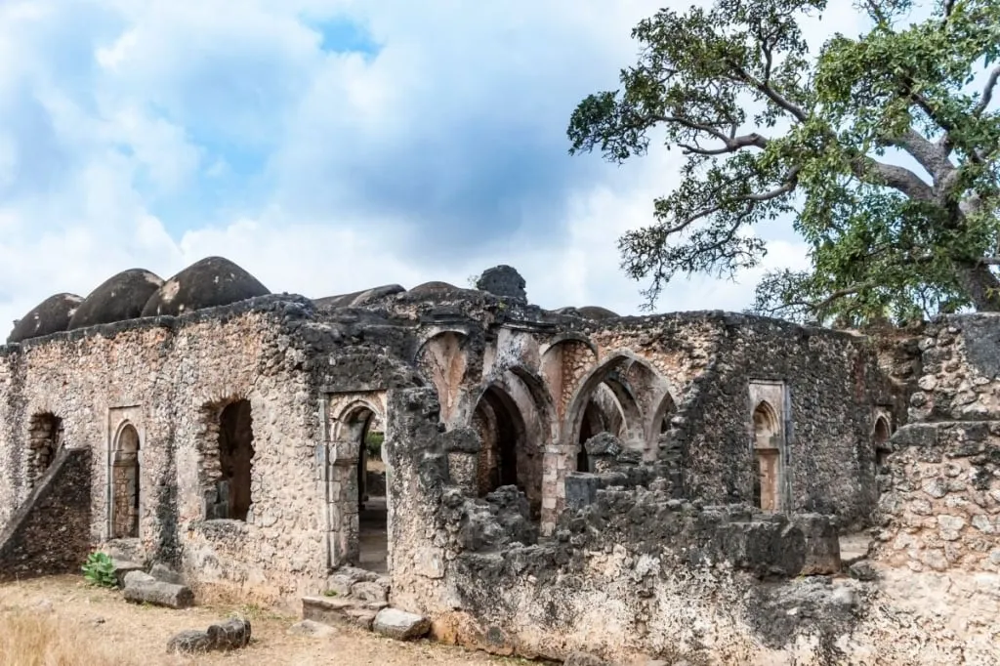
Nearby are the ruins of the 14th -16th century stone city of Songo Mnara, also a UNESCO World Heritage Site. Here are the remains of residential quarters and public buildings, including six mosques built from coral, a typical material for ancient coastal cities. Songo Mnara was also once a trading town that did business with China and India, based on the artifacts found within the ruins, such as coins and pottery, which served as exchange goods between the ancient nations.
Fifty kilometers north of the center of Dar es Salaam lies the small town of Kaole. There, visitors will find the ruins of the ancient stone city of Kaole, dating back to the 13th -16th century. To this day, the remains of two mosques and tombs of noblemen have survived. The artifacts found on the territory of Kaole indicate trade relations with China.The name Kaole means "go and see" in the language of the Zaramo.
The largest number of stone buildings and evidence of a previous culture in the region are preserved on the main island of the Zanzibar archipelago (although excavations have also been successfully conducted on the neighboring Pemba). The preserved city of Stonetown has an impressive historical legacy in Zanzibar, easily reached by ferry from Dar es Salaam’s port.
Dar es Salaam Beaches
For those who stay in Dar es Salaam, there are several options for beaches, right near the city. Dar is always warm (measuring from 23.3 to 28 °C, i.e., 73.94 to 82 °F for most of the year), so it’s a good idea to head to the beach to enjoy the sun and sand.
Perhaps the most famous and attractive beach is Coco Beach. It is quite a long stretch of shore with pleasant soft, white sand and gentle waves. You can wander barefoot on the sand, swim in the ocean and get a little sun (or, sit under an umbrella if you don’t want the sun). Enjoy a drink at one of the bars, or have a snack. However, the beach is public, so it's always crowded and sometimes the crowds leave garbage behind.
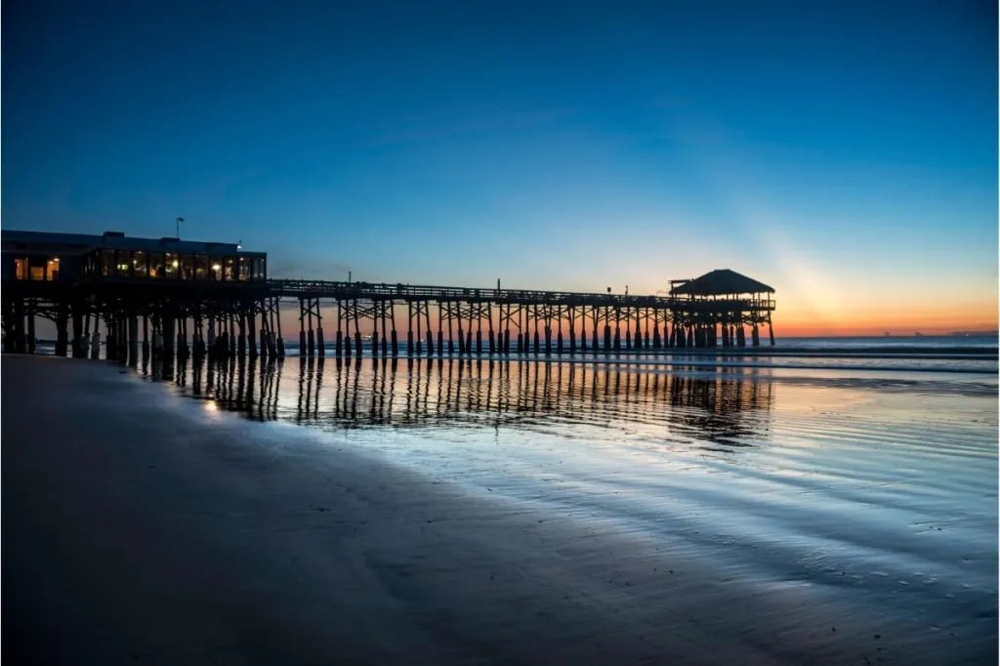
North from there, there is a narrow strip of Kawe beach, and even farther are the Mbali Public Beach and Ndege Beach. If you move from the central Coco Beach along the ocean coast to the south, you can soon find a spot to relax in the small Palm Beach, Tanzanite Beach Resort (here you can see fishing dhows - we recommend taking pictures against their background), Bakhresa Beach.
Much farther southwards, there is a special beach for Muslims: Islamic Club. It is stunningly beautiful, totally uncrowded, with very warm water (many say that Dar beaches’ water is warmer than at Zanzibar resorts). If you are looking for a simple cozy spot on the Indian Ocean coast within Dar and are willing to abide by the Islam rules of beach etiquette, this might be the perfect place for you to relax on the beach.
All the beaches listed above are public and are accessible to everybody. One of Dar's elite beaches is Yacht Club Beach, beside the Dar es Salaam Yacht Club. Those accustomed to relaxing in style can enjoy elite watersports here and meet a luxurious sunset on the clean beach. Club membership is required to enter this beach.
Within the city limits, at the southern end of the bay, you can relax at Kijichi Beach. You will be surrounded on all sides by the city of Dar es Salaam. This is probably the most suitable beach vacation option for the locals who do not have time to travel to the coast properly.
Now, if you want a little island adventure, you might enjoy Bongoyo or Mbudya Islands.
Island Beach Resorts: Bongoyo and Mbudya
Dar es Salaam operates the Dar es Salaam Marine Reserve System, or simply DMRS. This includes five uninhabited islands south of the city and four to the north. Only two of those nine islands, Mbudhya and Bongoyo, are of interest to tourists. These are the only ones with sandy beaches that can be reached by boat from Dar within half an hour or less.
Dar es Salaam operates the Dar es Salaam Marine Reserve System, or simply DMRS. This includes five uninhabited islands south of the city and four more north from there. Only two of those nine islands, Mbudhya and Bongoyo, are of interest to the tourists. They are the only ones with sandy beaches that can be reached by boat from Dar within half an hour or even faster.
Bongoyo Island is the most popular beach vacation spot outside Dar es Salaam. The boat leaves from the Bongoyo Island Ferry Terminal on the Msasani Peninsula. There are a couple of beaches on the island and a dense forest in which you can wander along the paths. Visitors can try to find the remains of a small German colonial-era building in the forest on the island, but it isn’t so easy!
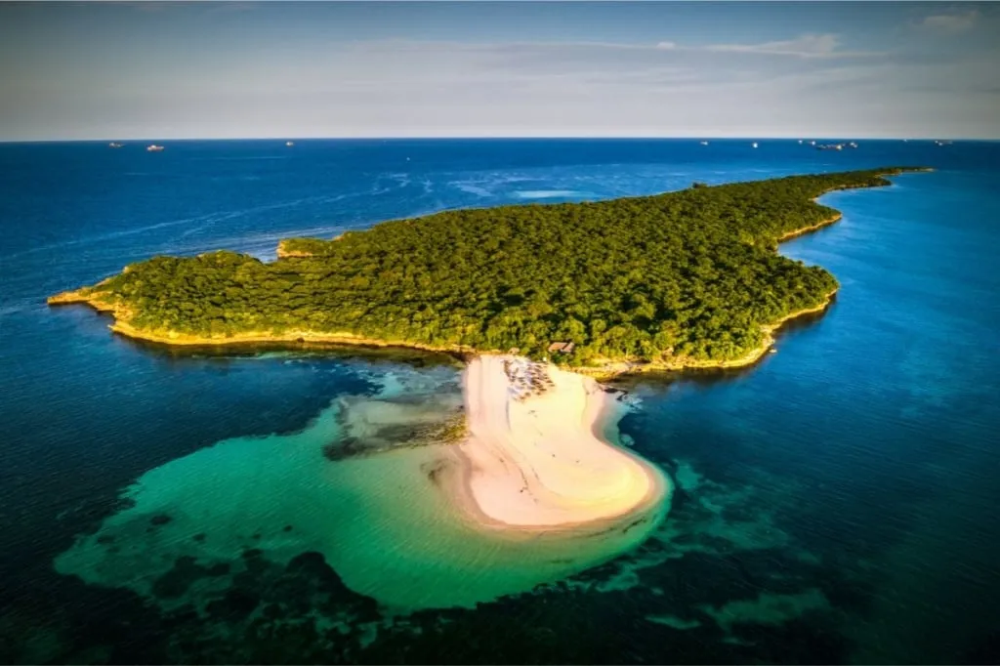
Bongoyo is a great day trip from Dar, you can go snorkeling, swimming or simply relax on the beach. The simple forest trails are great for hikes and the island is beautiful.
Mbudya Island is another nature reserve with a beach, white sand, but very few tourists. You can stroll around the island, relaxing in the sun, or go snorkeling.
Both islands have local vendors for drinks and simple food, and sun loungers and umbrellas are available for rent. It's best to spend one day on each of the islands if the goal is not to rush but to enjoy peace and serenity in the equatorial waters of the Indian Ocean. But you can also combine visits to both islands in one day if you want to look at the shores of both Bongoyo and Mboudia.
Unfortunately, frequent visits to these tiny islands by tourists deplete the resources of the conservation areas, and excessive fishing reduces the population of fish in the area. All of this affects the flora and fauna of the marine reserves negatively. But this impact of human activity is apparent in almost all of Tanzania's conservation areas. We hope very much that the local ecosystems can be restored by joint effort and that our children will inherit a world of fauna and flora that is still full of diversity.
Recreation with Children
For travelers with children, Dar has several kinds of family recreation in stock. Below are some of the places in the city that may be of interest to families with small children.
First of all are the fun water parks, Water World and Kunduchi Wet "N" Wild Water Park. The youngest guests of Dar es Salaam will find a load of amusements there, such as pools and waterslides.
Dear parents, please look up the attendance rules of these parks in advance (i.e., child’s height, acceptable attire, etc.), and consider how you will be able to mind your children, as it is a very popular place and there are sure to be crowds of kids playing at these water parks.
Children can look at the animals and learn more about their habits in the large Dar Es Salaam Zoo. It is a bit far from the city center, in the city's southern outskirts, but small children will definitely find it interesting. The zoo contains several dozen species of wild and domestic animals.
In the northern part of the city, there is the Bahari Zoo. It is much more modest, and adults will almost certainly feel sorry for the animals contained here. But perhaps this is an optional part of the program for those who can't afford a trip to a real nature reserve or a national park.
Shopping in Dar
Finally, let's discuss what you should buy in the local stores and souvenir shops to remember your time in Dar es Salaam.
Fish or seafood in the local fish market is not likely to be brought home, but buying a curious trinket in the Kariakoo market is more realistic. One of the things that will stay with you for a long time could be a bright piece of clothing or swatch of traditional Tanzanian cloth.
The best and definitely the most relevant gift for yourself or someone you love will be a piece of tanzanite, a gemstone mined only in Tanzania. This beautiful gem is blue-hued, ranging from sapphire-blue to ultramarine blue and sometimes almost purple. One can buy individual stones as a keepsake, as well as finished jewelry pieces from earrings to necklaces or rings. If you are unfamiliar with Tanzanite, look up a photo of Elizabeth Taylor, the Cleopatra of Hollywood. She adored the unique jewelry and was all in favor of tanzanite once it had been discovered in the 1960s. Tanzanite, when deftly faceted has an exquisitely simple and elegant look.
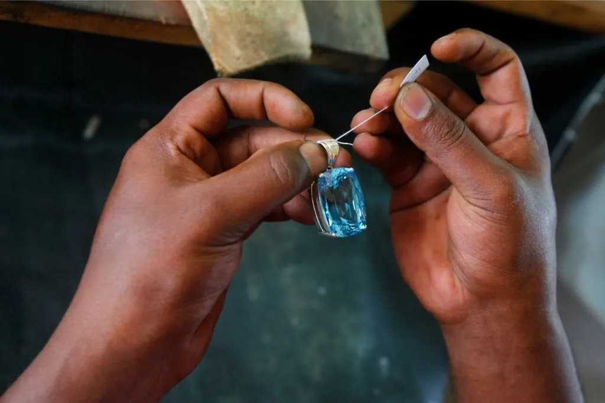
Another uniquely ‘Dar’ item would be a painting in the Tinga Tinga style. You will surely recognize this style even if you haven't heard the name before. Tinga Tinga is derived from the last name of a popular Tanzanian artist of the 1960s (his full name was Edward Saidi Tingatinga), who began painting for the love of it at the age of 36. He never attended art school and was entirely self-taught. Tingatinga painted simple African landscapes or animals in cartoon-ish style. His were always flat images, made in enamel used to coat bicycles and cars, in bright colors and patterns.
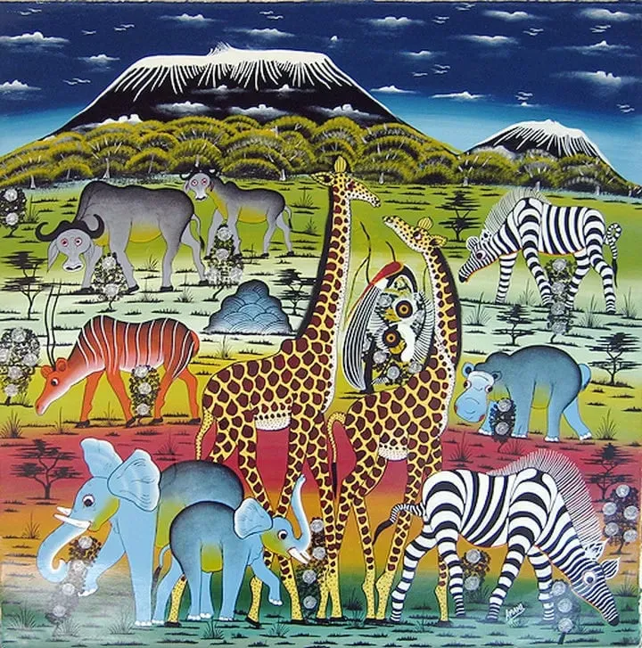
The Europeans who lived in Dar es Salaam at that time paid attention to the distinctive artist and began to buy his works and arrange exhibitions. Shortly after, Tingatinga's life ended tragically, but his friends and followers developed the artist's original style, which became famous. Now it is a very popular direction in contemporary art, known far beyond the borders of Swahili culture and even all of Africa.
Buy a colorful painting made in the Tinga Tinga style by a contemporary artist from Dar es Salaam, and it will be recognized as a sign of good taste. You can find interesting pieces in the gallery of the local Tinga Tinga Arts Cooperative Society, located in the heart of the Oyster Bay neighborhood.
A Glimpse into History of Dar es Salaam
While this could be the end of the story about Dar es Salaam, the picture would not be complete without a brief dive into the city's history. In addition, it is now even more interesting to know what causes Dar to be not only the most populous city in Tanzania and all of East Africa, but also one of the fastest-growing cities in the world.
The Heart of Swahili Coast
Dar es Salaam lies in the heart of the Swahili Coast . The main activity that made the port important was trade. This is only logical since there have always been sea trade routes along the eastern coast of Africa. The northern territory of the East African coast is part of the maritime Silk Road.
Trade relations with Arabs and Asians strongly influenced the Swahili culture in many different aspects: language development, the rapid growth of education, access to vital resources through trade, extreme wealth for local elites, borrowing of religious practices, and new types of craftsmanship. These phenomena rapidly developed among the Swahili Coast peoples giving them a tremendous advantage over the continental African population, which continued to live a more traditional way of life, usually involving hunting, cattle breeding, and farming. The coastal peoples put themselves above the continental Africans, considering the latter to be uncultured (which explains, in some respect, the participation of the Swahili peoples in the slave trade with "their fellows," i.e., Africans from the mainland).
The biggest influence on Swahili culture was that of the Arab world, which greatly enriched the local language and furthered the religion of Islam. Thanks to excavations in ancient Swahili towns, we know that stone mosques were built here as early as the 8th century AD. The influence of Indian and Persian cultures is noticeable, and the fact of the influence of German culture and later the British culture (colonial period) is undeniable, as well.
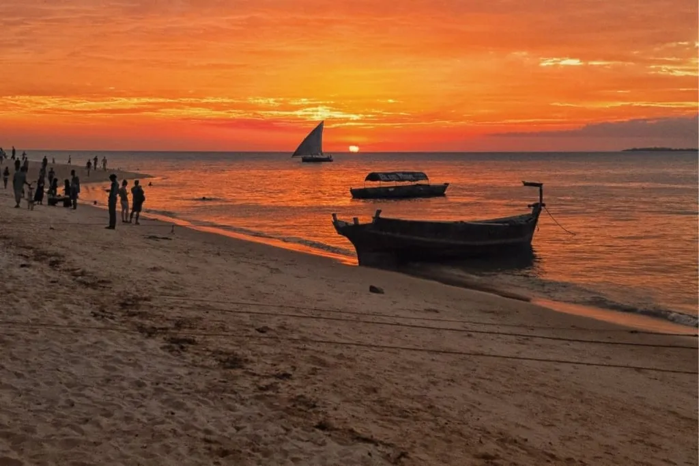
City Founding and Colonial Capital
Until the middle of the 19th century, the small fishing village of Mzizima ("Healthy Town") stood by the bay that now surrounds the metropolis that is Dar es Salaam.
In parallel, on the neighboring island of Zanzibar, there was a struggle for liberation from Oman, which succeeded in the 1850s. After wresting Zanzibar from the clutches of the Omani Empire and becoming its first sultan, the ruler Majid ibn Said decided to strengthen his position and build a city on the coast of Africa. Thus a new city, called “Harbor of Peace” or “House of Peace” was constructed, what we callDar es Salaam.
The rapid development of the city as an important port as well as a starting point for the new Tanganyika Railroad was greatly influenced by the German Empire, which from 1884 began to colonize East Africa. Following the defeat in World War I, Germany ceded the territory of its colony to Britain and Belgium. Thus, Dar es Salaam came under British influence, becoming the capital of Tanganyika. After World War I it was considered as a League of Nations Mandate Territory and after World War II as a UN Trust Territory.
A large number of people came to the city during British rule from British India, as well as from Britain itself and partly from other parts of Europe. Most of them settled in the Oyster Bay area (aka Coco Beach, where the city's best beach is located). That is what made the area Europeanized and furthermore, attractive as a tourist destination.
The Capital of Independent Tanzania
After World War II, the city started to grow rapidly. When Tanganyika gained independence and was united with Zanzibar, Dar es Salaam began a new growth spurt, becoming the capital of the United Republic of Tanzania. The city slowed down its development slightly during the period of the socialist experiment (the Ujamaa of Julius Nyerere), as the government encouraged people to stay on their land and farm together. The era of rural lifestyle had definitely passed, so, the Ujamaa was forgotten in the 1980s, and the coast was flooded with young people in search of a better life.
In the 1990s, another attempt was made to balance the overpopulated Dar es Salaam and to encourage relocation to rural areas of Tanzania. In 1996, the capital was officially relocated to the city of Dodoma, which is in the center of the nation. Virtually all government offices, embassies, and businesses refused to move to the underdeveloped city and remained by the Indian Ocean coast. Thirty years later, we can see that Dar remains the most developed city in the country and the de facto capital in terms of culture, economy, and even politics.
Dar es Salaam, a Universal Hot Spot
The megalopolis’ rapid development is best evidenced by the Tanzanian National Bureau of Statistics’ report:
- in 2002, Dar’s population was 2,487,288 people;
- in 2012, it amounted to 4,364,521 people;
- in 2020 (preliminary calculations are outdated since there was no new census), this number reached 5,401,814 people (but we already know from indirect data that reality is far ahead of projections - according to the UN, in 2020, the city had 6,702,000 people).
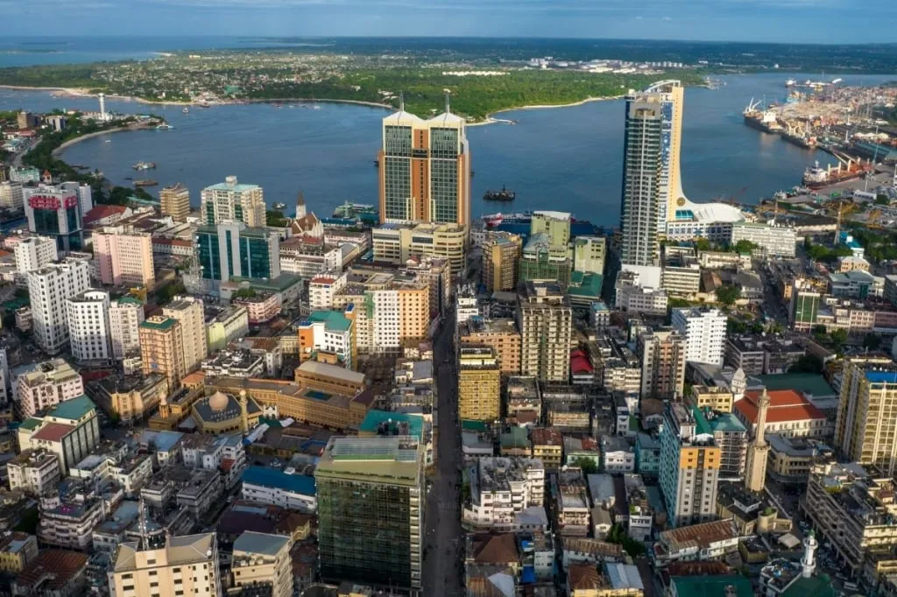
In all likelihood, Dar es Salaam will remain the most populous city in East Africa, at least until the middle of the 21st century. It means further rapid development of all infrastructure - Dar authorities have a bulk of development plans, which are already successfully implemented). The city is going to become even more attractive and convenient for tourism because Tanzania lives by tourism and will invest in this industry.
All indications are that Dar is surely worth visiting on a Tanzania holiday, particularly if you plan to head to the nearby Zanzibar resorts. The 21st century is going to change Africa beyond recognition, and it's already happening. So it looks like a trip to the Capital of the Swahili Coast should definitely get a visit!
All content on Angelino Adventures is created with expert insights and thorough research, in line with our Editorial Policy.


Want to know more about Tanzania adventures?
Get in touch with our team! We've explored all the top destinations across Tanzania. Our Kilimanjaro-based adventure consultants are ready to share tips and help you plan your unforgettable journey.
 Tanzania Safaris
Tanzania Safaris
 Kilimanjaro and other mountains
Kilimanjaro and other mountains
 About Angelino Adventures
About Angelino Adventures
 Tanzania Islands
Tanzania Islands